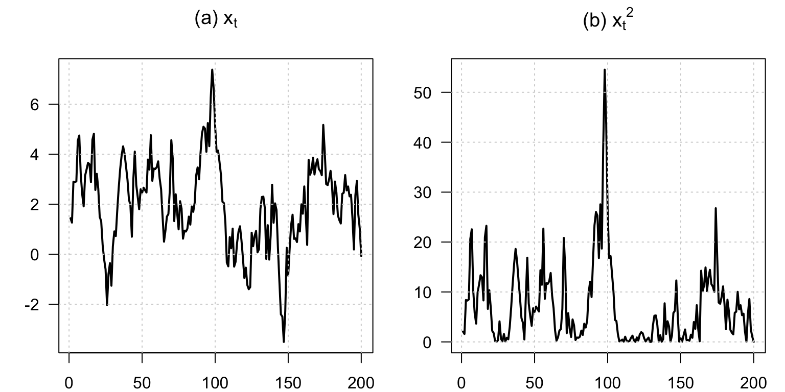
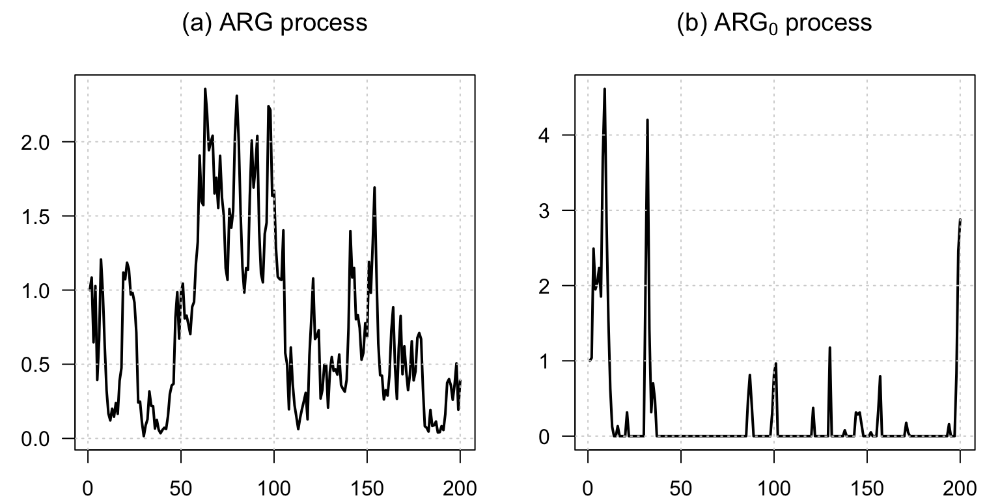
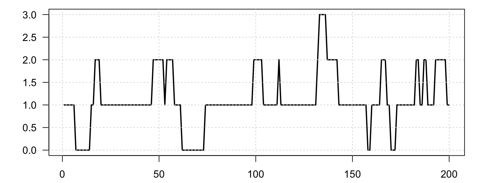
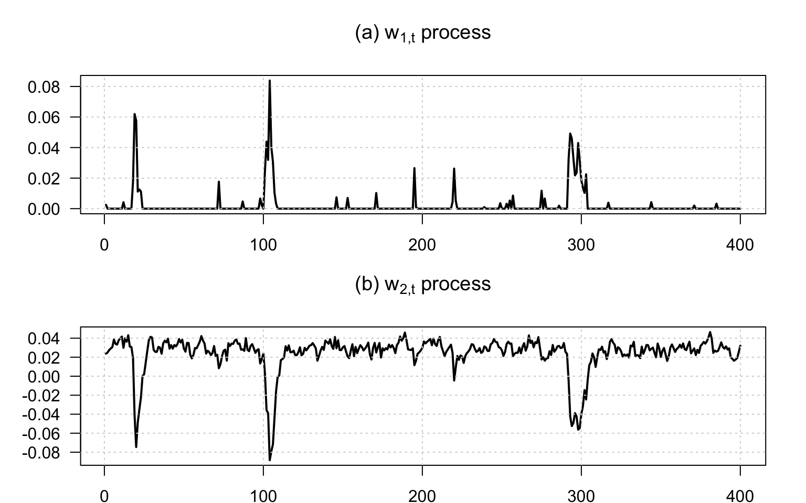
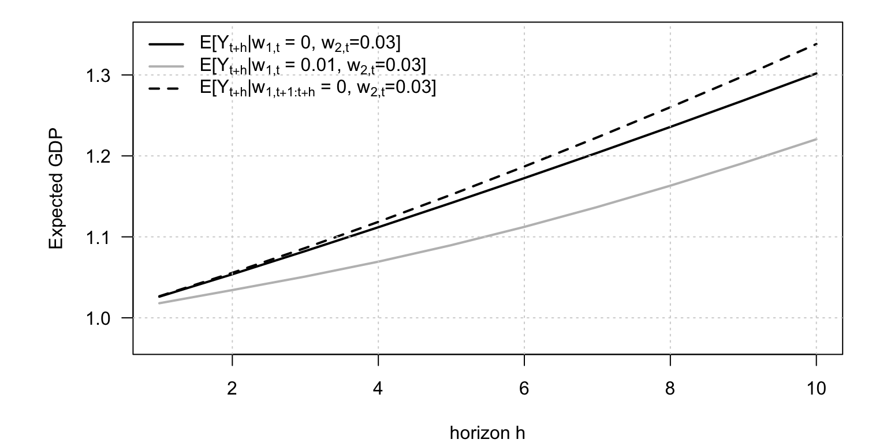
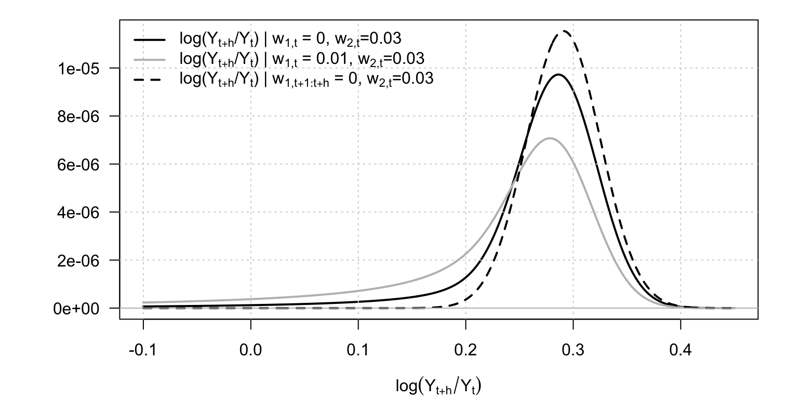

Chapter 1 Affine processes
The following code produces a figure showing simulated path of an AR(1) process \(x_t\), and \(x_t^2\).
1.1 A simple Gaussian AR(1) generates nonlinear transforms such as squared states
This example shows how a simple Gaussian AR(1) generates nonlinear transforms such as squared states.
Code
# Purpose: This example shows how a simple Gaussian AR(1) generates nonlinear transforms such as
# squared states
set.seed(123)
T <- 200
phi <- .9
mu <- 2 * (1 - phi)
sigma <- 1
# Start from the unconditional mean.
x.t <- mu / (1 - phi)
x <- NULL
for (t in 1:T) {
x.t <- mu + phi * x.t + sigma * rnorm(1)
x <- c(x, x.t)
}
par(mfrow = c(1, 2), plt = c(.15, .95, .1, .85))
plot(x, type = "l", xlab = "", ylab = "", las = 1,
main = expression(paste("(a) ", x[t], sep = "")), lwd = 2)
grid()
plot(x^2, type = "l", xlab = "", ylab = "", las = 1,
main = expression(paste("(b) ", {x[t]}^2, sep = "")), lwd = 2)
grid()
The following code produces a figure illustrating ARG processes.
1.2 Standard ARG and ARG0 processes
This example contrasts a standard ARG process with its ARG0 counterpart.
Code
# Purpose: This example contrasts a standard ARG process with its ARG0 counterpart
library(DTAM)
set.seed(123)
# Simulate two ARG specifications and compare their paths.
par(mfrow = c(1, 2), plt = c(.15, .95, .1, .85))
W <- simul_ARG(200, mu = .05, nu = 1, rho = .95, alpha = 0)
plot(W, type = "l", xlab = "", ylab = "", las = 1,
main = expression(paste("(a) ", ARG, " process", sep = "")), lwd = 2)
grid()
W <- simul_ARG(200, mu = .5, nu = 0, rho = .95, alpha = .1)
plot(W, type = "l", xlab = "", ylab = "", las = 1,
main = expression(paste("(b) ", ARG[0], " process", sep = "")), lwd = 2)
grid()
The following code simulates a Poisson process.
1.3 The jump-like dynamics generated by a compound Poisson process
This example illustrates the jump-like dynamics generated by a compound Poisson process.
Code
# Purpose: This example illustrates the jump-like dynamics generated by a compound Poisson
# process
library(DTAM)
set.seed(123)
# Simulate and plot a compound Poisson path.
par(mfrow = c(1, 1), plt = c(.1, .95, .15, .95))
W <- simul_compound_poisson(200, Gamma = 1, Pi = 0.95, lambda = .1)
plot(W, type = "l", las = 1, lwd = 2, xlab = "", ylab = "")
grid()
The following code simulate a recursive Gaussian-ARG process.
1.4 Recursive Gaussian-ARG model with crisis and GDP-growth components
This example builds a two-factor recursive Gaussian-ARG system with a crisis component and GDP-growth component.
Code
# Purpose: This example builds a two-factor recursive Gaussian-ARG system with a crisis
# component and GDP-growth component
library(DTAM)
set.seed(123)
mu <- .01
beta <- .8 / mu
alpha <- .05
rho <- .6
sigma <- .005
kappa <- .03 * (1 - rho)
# Calibrate the recursive Gaussian-ARG system.
# Save the parameterization for the next examples.
model <- list(
mu = mu, beta = beta, alpha = alpha, rho = rho, sigma = sigma, kappa = kappa
)
par(mfrow = c(2, 1), plt = c(.1, .95, .15, .7))
nb_periods <- 400
# Simulate and plot the nonnegative crisis factor.
W1 <- simul_ARG(nb_periods, mu = mu, nu = 0, rho = beta * mu, alpha = alpha)
plot(W1, type = "l", xlab = "", ylab = "", las = 1,
main = expression(paste("(a) ", w[1*','*t], " process", sep = "")), lwd = 2)
grid()
mean_W1 <- alpha * mu / (1 - beta * mu)
mean_W2 <- (-mean_W1 + kappa) / (1 - rho)
# Simulate GDP growth conditional on the crisis factor.
W2 <- mean_W2
for (t in 2:nb_periods) {
W2 <- c(W2, -W1[t] + kappa + rho * W2[t - 1] + sigma * rnorm(1))
}
plot(W2, type = "l", xlab = "", ylab = "", las = 1,
main = expression(paste("(b) ", w[2*','*t], " process", sep = "")), lwd = 2)
grid()
The following code uses the previous model to compute forecasts of GDP (GDP growth is \(w_{2,t}\) of the previous process, and \(w_{1,t}\) is a crisis regime).
1.5 GDP forecasts under different crisis states
This example shows how the previous model can be used to produce horizon-by-horizon GDP forecasts under different crisis states.
Code
# Purpose: This example shows how the previous model can be used to produce horizon-by-horizon
# GDP forecasts under different crisis states
psi <- function(U, model) {
# U is a 2 x K matrix collecting the transform arguments.
mu <- model$mu
beta <- model$beta
alpha <- model$alpha
rho <- model$rho
sigma <- model$sigma
kappa <- model$kappa
u1 <- U[1, ]
u2 <- U[2, ]
a1 <- mu * (u1 - u2) / (1 - mu * (u1 - u2)) * beta
a2 <- u2 * rho
b <- mu * (u1 - u2) / (1 - mu * (u1 - u2)) * alpha + u2 * kappa + u2^2 * sigma^2 / 2
list(a = rbind(a1, a2), b = b)
}
# Three cases: current crisis only, current + future crises, and no future crises.
U <- matrix(c(0, 1,
-10000, 1,
-10000, 0), 2, 3)
# Set the forecast horizon and the two initial states.
H <- 10
X <- matrix(c(0, mean_W2,
.01, mean_W2), 2, 2)
AB <- reverse_MHLT(psi, U, H = H, psi.parameterization = model)
# Recover the three conditional GDP forecasts from the transform coefficients.
GDP_fcst_1 <- c(AB$B[, 1, ]) + t(matrix(AB$A[, 1, ], 2, H)) %*% X[, 1]
GDP_fcst_2 <- c(AB$B[, 1, ]) + t(matrix(AB$A[, 1, ], 2, H)) %*% X[, 2]
GDP_fcst_3 <- c(AB$B[, 2, ] - AB$B[, 3, ]) +
t(matrix(AB$A[, 2, ] - AB$A[, 3, ], 2, H)) %*% X[, 1]
# Plot the forecast profiles.
par(plt = c(.15, .95, .2, .95))
plot(exp(GDP_fcst_1), type = "l", lwd = 2, las = 1,
xlab = "horizon h", ylab = "Expected GDP", ylim = c(.97, 1.35))
lines(exp(GDP_fcst_2), col = "grey", lwd = 2)
lines(exp(GDP_fcst_3), lwd = 2, lty = 2)
grid()
legend("topleft",
legend = c(
expression(paste(E, "[", Y[t+h], "|",
w[1*','*t], " = 0, ",
w[2*','*t], "=0.03]", sep = "")),
expression(paste(E, "[", Y[t+h], "|",
w[1*','*t], " = 0.01, ",
w[2*','*t], "=0.03]", sep = "")),
expression(paste(E, "[", Y[t+h], "|",
w[1*','*t+1:t+h], " = 0, ",
w[2*','*t], "=0.03]", sep = ""))
),
lty = c(1, 1, 2),
col = c("black", "grey", "black"),
lwd = c(2, 2, 2), bty = "n")
The following code displays the conditional pdf of GDP at different horizons.
1.6 Laplace transforms can recover the full conditional distribution of future GDP growth
This example illustrates how Laplace transforms can recover the full conditional distribution of future GDP growth.
Code
# Purpose: This example illustrates how Laplace transforms can recover the full conditional
# distribution of future GDP growth
library(DTAM)
# Here the variable of interest is cumulated GDP growth.
# If indic_no_crisis is TRUE, future crisis realizations are shut down.
psi_logGDP <- function(u, model) {
H <- model$H
X <- model$X
if (model$indic_no_crisis) {
U <- rbind(-10000, 1 * c(u))
} else {
U <- rbind(0, 1 * c(u))
}
AB <- reverse_MHLT(psi, U, H = H, psi.parameterization = model)
if (model$indic_no_crisis) {
U <- matrix(c(-10000, 0), 2, 1)
AB_1w0 <- reverse_MHLT(psi, U, H = H, psi.parameterization = model)
}
if (model$indic_no_crisis) {
psi <- exp(t(AB$A[, , H] - AB_1w0$A[, , H]) %*% X + c(AB$B[, , H] - AB_1w0$B[, , H]))
} else {
psi <- exp(t(AB$A[, , H]) %*% X + c(AB$B[, , H]))
}
psi
}
model$H <- 10
gamma <- seq(-.1, .45, by = .001)
# Recover densities under alternative crisis assumptions.
model$indic_no_crisis <- FALSE
model$X <- X[, 1]
pdf.dy_with_crisis_w1ini0 <- make_pdf(model, gamma, psi_logGDP)
model$indic_no_crisis <- FALSE
model$X <- X[, 2]
pdf.dy_with_crisis_w1iniNot0 <- make_pdf(model, gamma, psi_logGDP)
model$indic_no_crisis <- TRUE
pdf.dy_no_crisis <- make_pdf(model, gamma, psi_logGDP)
# Plot the three conditional distributions.
par(mfrow = c(1, 1))
par(plt = c(.15, .95, .2, .95))
plot(gamma, pdf.dy_with_crisis_w1ini0, type = "l", main = "dy", lwd = 2,
ylim = c(0, max(pdf.dy_with_crisis_w1ini0,
pdf.dy_with_crisis_w1iniNot0,
pdf.dy_no_crisis)),
xlab = expression(paste(log(Y[t+h] / Y[t]), sep = "")), ylab = "", las = 1)
grid()
lines(gamma, pdf.dy_with_crisis_w1iniNot0, col = "grey", lwd = 2, lty = 1)
lines(gamma, pdf.dy_no_crisis, col = "black", lwd = 2, lty = 2)
abline(h = 0, col = "grey")
legend("topleft",
legend = c(
expression(paste("log(", Y[t+h], "/", Y[t], ") | ",
w[1*','*t], " = 0, ",
w[2*','*t], "=0.03", sep = "")),
expression(paste("log(", Y[t+h], "/", Y[t], ") | ",
w[1*','*t], " = 0.01, ",
w[2*','*t], "=0.03", sep = "")),
expression(paste("log(", Y[t+h], "/", Y[t], ") | ",
w[1*','*t+1:t+h], " = 0, ",
w[2*','*t], "=0.03", sep = ""))
),
lty = c(1, 1, 2),
col = c("black", "grey", "black"),
lwd = c(2, 2, 2), bty = "n")